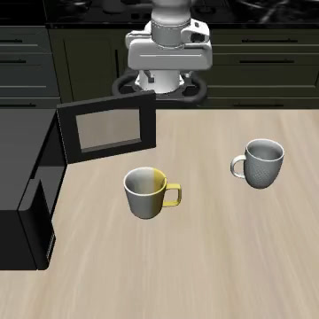

The seed moved the microwave
We ran 521 evaluations of robot policies in simulation to find out where a success rate comes from. The random seed moves furniture that the stored scenes never record, and the GPU, renderer, simulator version and a few hidden settings each change results as much as a new seed.